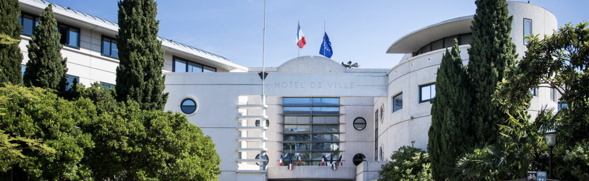
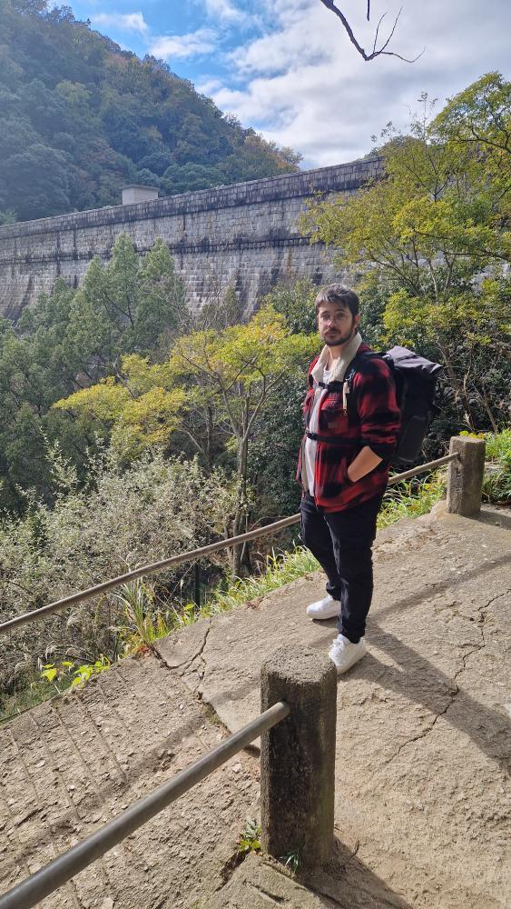
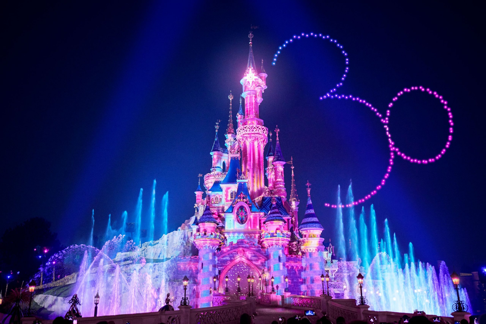

Technicien Informatique et Téléphonie
Mairie d'Argenteuil (2021 - Présent)
Gestion d'un parc de +3000 postes. Création de scripts pour l'automatisation, gestion réseau et téléphonie.
Expertise en maintenance informatique, réseaux, gestion de projets et développement (Web, Unity, C#).
Actuellement en recherche d'un poste sur Toulouse.

Titulaire d'un Master en Management Ingénierie Informatique - Gaming & SmartTech et d'un BTS Systèmes Numériques Informatique et Réseaux.
J'allie des compétences techniques solides (maintenance, réseaux, développement) à une passion forte pour le domaine de l'informatique.
Mes expériences variées, de la Mairie d'Argenteuil à la régie de Disneyland Paris, m'ont appris la rigueur, le travail d'équipe et la gestion du stress en environnement critique.
Pilotage & Planification
Méthodes Agile (Scrum)
Gestion d'équipe
TCP/IP, VLAN, VPN
Admin Windows Server (AD, GPO)
Virtualisation
SQL Server, MySQL, Oracle
Visual Studio, Unity, Unreal Engine / Git
Scripting PowerShell (Automatisation)
Gestion de parc (+3000 postes)
Support N2 & Dépannage Hardware
Téléphonie & Ticketing
C# (Unity), Python
Web Fullstack (PHP, JS, HTML/CSS)
Développement Android
Intervention en milieu critique
Support VIP & Utilisateurs
Gestion du stress & Rigueur

Mairie d'Argenteuil (2021 - Présent)
Gestion d'un parc de +3000 postes. Création de scripts pour l'automatisation, gestion réseau et téléphonie.

Disneyland Paris (2022 - 2023)
Programmation sur Medialon, supervision et monitoring temps réel des lumières et du son pour les spectacles.

Aleaur (2018 - 2021)
Alternance de 3 ans. Développement web et gestion/administration de bases de données.
ESIEE-IT (2018 - 2021)
Spécialisation SmartTech.
Lycée J. Jaurès (2016 - 2018)
Systèmes Numériques Informatique et Réseaux.
Lycée J. Jaurès (2015 - 2016)
Système d'Information et Numérique.
Castanet-Tolosan
sullyvan.modeste@gmail.com
06.25.54.25.15